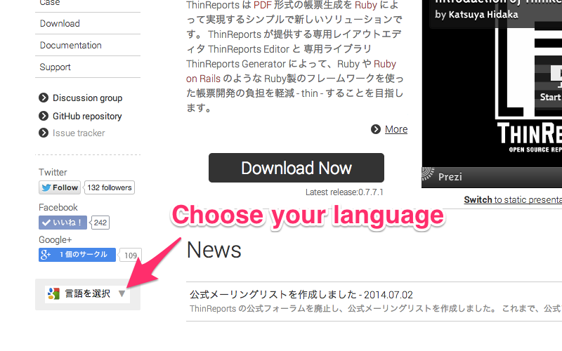
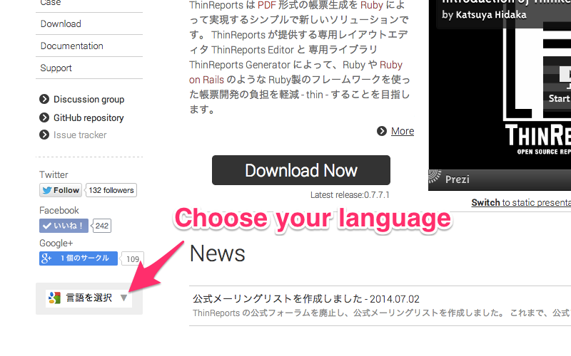

公式サイトが多言語に対応しました
公式サイト www.thinreports.org の利用者のうち、約 30% が日本語以外の環境を使っています。 この状況に対応するために Google ウェブサイト翻訳ツール を設置しました。
以下のように、自分の言語を選択することでサイト全体が Google 翻訳によって自動的に翻訳されます。

ぜひご活用下さい。また、よろしければ翻訳改善にご協力ください。
comments powered by Disqus
公式サイト www.thinreports.org の利用者のうち、約 30% が日本語以外の環境を使っています。 この状況に対応するために Google ウェブサイト翻訳ツール を設置しました。
以下のように、自分の言語を選択することでサイト全体が Google 翻訳によって自動的に翻訳されます。

ぜひご活用下さい。また、よろしければ翻訳改善にご協力ください。